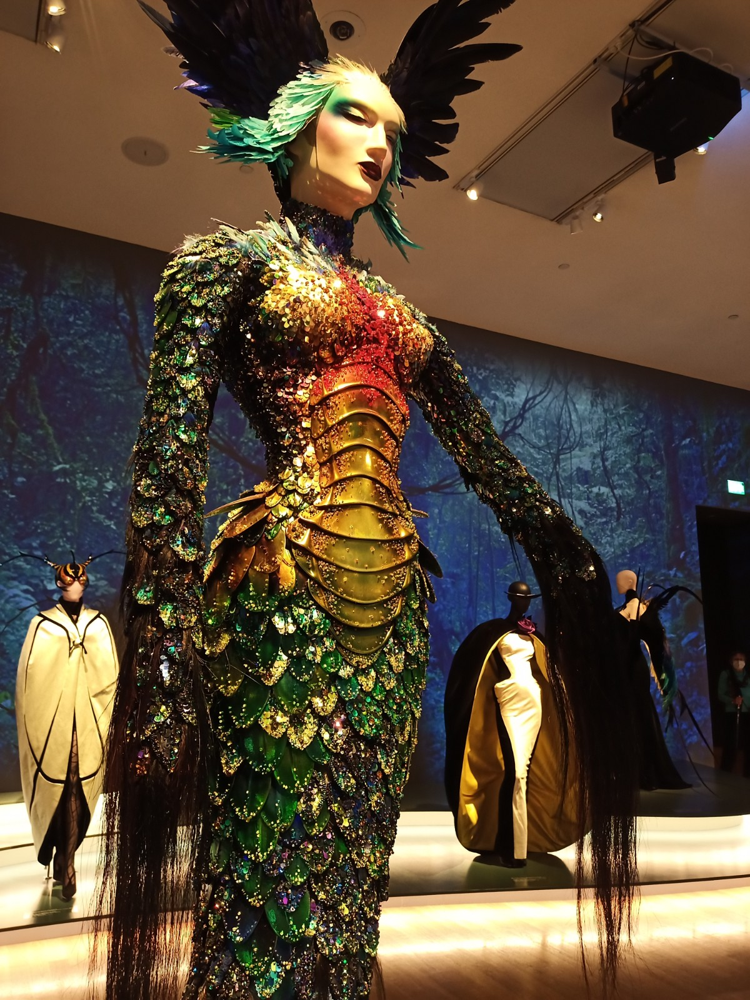

Moving and discovering
04-11-2020
It's 5:00 in the morning and we are driving away from the Netherlands, onto our adventure in Munich. My car is packed until the top of the ceiling and it's having a hard time making speed, but we are on our way. My sister and her boyfriend are leaving 3 hours later with a van to bring the rest of our stuff. Or so we thought... Because after we have received the keys to our appartment (yay!) we get a text from my sister: We are next to the highway, our car broke down.
It's not exactly what we had hoped for but they got safely to the next closest town. Meanwhile we were unpacking our stuff and our IKEA order dropped by. At the same time we were trying to figure something out. In the end we realised that it was not possible for them to rent another van there and they took a cute little hotel there. The next day we rented a van from Munich and drove 300 km to pick up our stuff. A friendly mechanic was driving all the way from the Netherlands to pick my sister and her boyfriend up together with the broken van. Sadly enough, they could not see our new place, but luckily everyone got home undamaged. Lessons were learned: next time we rent a van from the start ;)
After moving and building up furniture it was time to explore more of Munich. I was really missing my bike to drive around town so I quickly went to ebay-kleinanzeigen.de on the hunt for a nice bike. I bought one from a very nice old man who did not speak any German (Das Fahrrad sieht sehr gut aus, or something like that) and off I was. The first time I was visiting Munich there were ads all around the city about an exposition in the Kunsthalle by Thierry Mugler. I was instantly interested and told my boyfriend I wanted to go there. If you, like my boyfriend, don't know who he is, I will explain it quickly. Thierry Mugler is a famous French couturier who makes amazing clothes worn by countless celebrities. He has worked together with David Bowie, Celine Dion, Beyoncé, Lady Gaga, Kim Kardashian, Cardi B, George Michael, etc. I rented an audioguide at the Kunsthalle and had a lovely afternoon looking at haute couture. The exposition is planned until the end of February but they might change that due to Covid-19 restrictions, so check their website.
If you're looking for a huge slice of cake and some nice coffee or tea I can definitely recommend San Pietro café in the city centre. It's not the most hip café but it always puts me in a good mood when they serve me a huge slice of their Kuchen. When you're hungry for some dinner, Jack Glockenbach makes some very nice Vietnamese food. Suitable for vegetarians and vegans, they have something for everyone and serve it very nicely as well. A week before the new lockdown, I met a new friend in the Glockenbach Viertel. We were looking for a place to have a cocktail but everything was full. Finally we found this bar which was sort of dark and looked pretty fancy. Inside it was lighter because of the interesting ceiling they have which consists of a lot of woodwork and cool lighting. If you're curious I would definitely check it out, the cocktails were a bit more pricey than usual but sooo tasty.